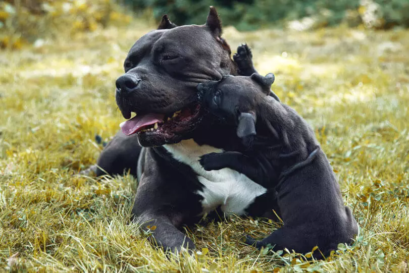

American Bully

American Bully: saiba tudo sobre o “Valentão Americano”
O nome já é um pouco assustador, uma vez que “American Bully”, em tradução literal, quer dizer “valentão americano”. Considerando a sua aparência robusta e arrojada, essa raça de cachorro pode parecer aterrorizante e destruidora. Mas, será mesmo?
Com uma origem repleta de controvérsias e um visual peculiar, a american bully é uma raça mais do que especial.
A seguir, reunimos todos os detalhes e informações para você conhecer a raça american bully. Encontre dados como a história e o nível de exercício necessário para mantê-lo saudável e feliz. Confira!
Dados importantes sobre a raça
Origem: Estados Unidos;
Peso: Existem diferentes tipos de American Bully e o peso médio de cada um costuma variar. No geral, a raça fica entre os 30 kg e os 50 kg;
Altura: 40 a 55 cm de altura média;
Expectativa de vida: Em média de 8 a 15 anos.
História
Como surgiu o American Bully
De modo geral, as raças caninas surgem a partir do cruzamento de diferentes tipos de cachorros, dando origem a uma linhagem com características únicas, devidamente selecionadas pela natureza.
Esse é o caso do american bully, um cão que surgiu nos Estados Unidos. As particularidades do american bully resultam da mistura de diferentes raças. O problema? Ninguém sabe exatamente quais foram as raças caninas que deram origem ao american bully e há grandes controvérsias.
Alguns pesquisadores dizem que ele só pode ser fruto da mistura do buldogue com o american terrier. Por outro lado, outros acreditam que os pit bulls também estão envolvidos na origem do american bully. Mas o que importa é que o american bully foi reconhecido como uma raça específica de cães em 2013, pelo United Kennel Club (UKC).
O propósito da raça era não apenas obter um cachorro amoroso e companheiro, mas também que tivesse uma aparência forte e robusta.
Características
Robusto é a palavra que melhor define o american bully. Isso porque ele não é um cão alto ou comprido, mas é um animal que facilmente passa dos 30 kg, o que o deixa com uma aparência bastante forte.
Sua musculatura é densa e definida, transmitindo uma imagem de muita resistência física. Isso faz com que as pessoas, de certa forma, se assustem com ele. Mas isso só até conhecê-lo melhor: a raça é muito dócil e carinhosa.
Em alguns países, é comum que as características físicas do american bully sejam padronizadas com o corte das orelhas. Porém, a prática é proibida no Brasil por lei federal.
A seguir, confira as principais características físicas, de acordo com os subtipos da raça.
Quais são os tipos de American Bully
A seguir, descubra os principais subtipos de cachorros da raça american bully:
American Bully Pocket
O american bully pocket é o tipo mais popular. Se alguém fala para você que possui um cachorro dessa raça, as chances são grandes de que o animal seja da variedade pocket. É o cachorro com a robustez característica da raça, mas com dimensões um pouco mais compactas.
American Bully Classic
O classic é o american bully mais parecido com a variedade de cães que surgiram ainda no começo da raça. Ele costuma ser um pouco menos robusto que os outros e parece muito com o American Staffordshire Terrier.
American Bully Standard
O standard é o american bully que segue, exatamente, os padrões da raça. As fêmeas costumam ter entre 40 e 48 cm de altura. Já os machos ficam entre 43 e 51 cm.
American Bully Extreme
O subtipo extreme ainda não é reconhecido oficialmente, mas, cada vez mais, é comum encontrar cachorros dessa variedade. Eles são uma versão ainda mais atlética, de estatura baixa, peso elevado e peito bem aberto, com uma grande distância entre as patas dianteiras.
American Bully XL
Em inglês, a sigla “XL” quer dizer “extra grande”. Nessa variedade, os cães podem ser de 10 a 15 centímetros maiores do que a média geral do american bully.
Cores da raça
A raça tem uma ampla gama de cores de pelagem, incluindo: malhado, castanho, preto e branco, branco, prata, azul, marrom amarelado, marrom acinzentado, creme, vermelho, marrom, cinza e preto.
Temperamento do American Bully
A melhor definição para o comportamento do american bully é a palavra “doçura”. A sua aparência pode fazer com que muitas pessoas tenham pavor desses cães, mas eles são muito docéis e brincalhões. Inegavelmente, apreciam a companhia de seus tutores, seguindo-os de um lado para o outro.
Eles são gentis e amigáveis, adorando o contato com outros cães e outras pessoas também.
O American Bully com crianças, estranhos e outros animais
A raça é um ótimo cachorro para crianças, sendo um grande companheiro, carinhoso e brincalhão. No entanto, é preciso ressaltar que, por conta da robustez desse cão, ele pode ser um pouco atrapalhado e bruto, machucando acidentalmente crianças menores.
Por conta de sua aparência, ele pode assustar estranhos e causar certo medo, mas essa raça não é agressiva, nem costuma atacar. Sendo assim, o american bully também costuma se dar bem com estranhos que visitam sua família, como amigos e familiares.
A esperteza é um ponto forte e, caso ele perceba estranhos com más intenções, pode alertar a família com latidos. No entanto, não deve ser considerado um cão de vigilância, uma vez que tudo o que quer é uma grande proximidade com seu dono e sua família.
De modo geral, outros animais e o american bully também se dão bem, desde que a adaptação seja feita da forma correta.
O American Bully late muito?
De modo geral, não. Ele não costuma estranhar pessoas diferentes e não é muito afobado. Essa raça de cachorros só late para avisar que há algo suspeito acontecendo.
O American Bully é destruidor?
A raça foi criada para ser um cão de companhia, ficando ao lado de seus familiares nos mais diferentes momentos do dia. Por isso, deixá-lo sozinho por muito tempo pode gerar um comportamento considerado “destruidor”, como arranhar portas ou morder sapatos, por exemplo.Além da solidão, outros fatores que podem causar o comportamento destrutivo do american bully incluem a falta de exercícios e atividades físicas e insuficiência de espaço para um cão tão atlético.
O American Bully é agitado?
Não existe uma resposta definitiva a essa pergunta. O american bully, de modo geral, possui um nível elevado de energia e precisa de atividade física. Se receber a devida atenção, com caminhadas e brincadeiras que o estimulem, as chances dele ser excessivamente agitado são baixas.
Cuidados
Os principais cuidados com o american bully estão relacionados às atividades físicas. Esse é um cão com um grande nível de energia e, para ser feliz, precisa se exercitar bastante.
De modo geral, ele não solta muito pelo – exceto quando sua pelagem é trocada.
O american bully tem uma certa tendência a alergias, especialmente na pele. Para evitar problemas na região, os banhos devem incluir produtos neutros e que não causem irritação ou ressecamento.
Com uma alimentação saudável e balanceada, servida na quantidade correta para que o cachorro possa manter seu peso, não há nenhum outro cuidado específico com o american bully.
Saúde
Principais cuidados com a saúde do American Bully
A força do american bully se reflete também em seu nível de saúde. Raramente esse cachorro fica doente, mas isso pode acontecer. Os problemas de saúde comuns são: catarata, displasia de quadril e de cotovelo, hipertireoidismo e surdez.
Alguns problemas de pele também podem afetar essa raça, como alergias diversas em sua pelagem.
Por fim, é preciso atentar-se à saúde do coração do american bully. Faça checkups regulares e atente-se a sintomas específicos, como respiração curta e batimentos cardíacos acelerados quando o cachorro está em repouso.
Nível de exercício do American Bully
Prepare-se para fazer várias brincadeiras e atividades, caso esteja cogitando incluir um american bully na família. Esse animal possui muita energia e, para que ele seja feliz, são recomendados ao menos dois passeios diários.
Acima de tudo, as atividades não devem se limitar a caminhadas e corridas, uma vez que o esqueleto desse cachorro é propenso a displasias em pontos como quadril e cotovelo. É preciso, também, pensar em atividades sem impacto e que estimulem o animal intelectualmente, como jogos que envolvam a “caça” por petiscos, por exemplo.
Preço
Quanto custa um American Bully
Um filhote de american bully pode ter preços variados, a depender de seu tamanho e de seu subtipo. Em média, o preço se inicia a partir de R$ 2.500, podendo facilmente ultrapassar os R$ 5.000.
Antes de optar por comprar um cachorro, lembre-se de checar os canis de ONGS que estão sempre com cachorros em busca de um lar e de uma família amorosa para cuidar deles.